AesMask
Match prompt tokens to aesthetic anchors with CLIP similarity, aggregate their cross-attention affinity, and form a one-shot focus mask for image patches that control perceived quality.
ECCV 2026 Accepted
A project led by Xuanhua Yin for faster, sharper, and more preference-aligned text-to-image generation without training or modifying backbone weights.
School of Computer Science, The University of Sydney
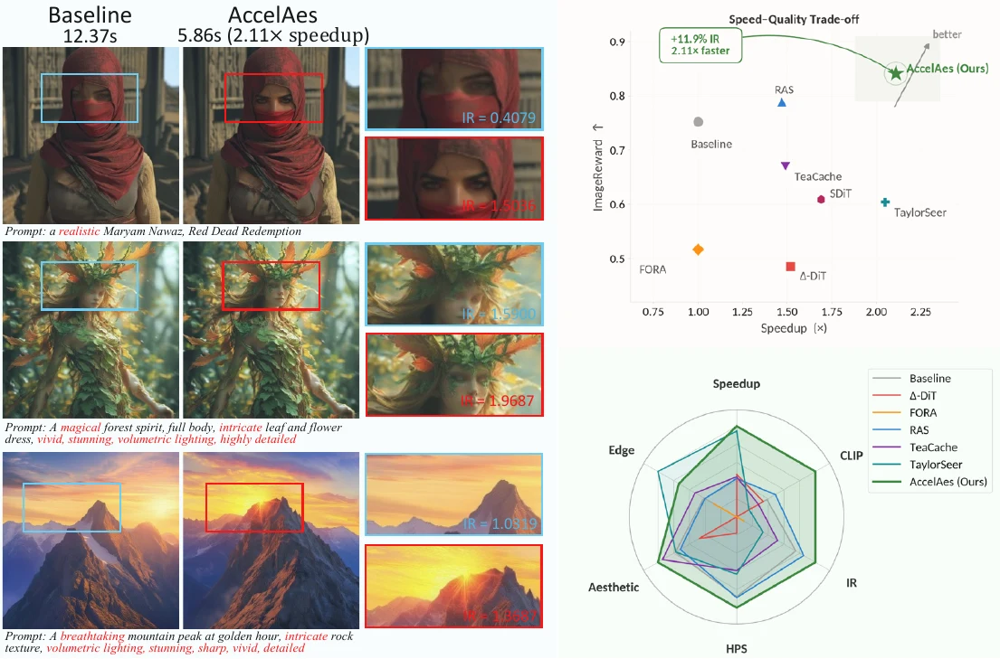
Abstract
Diffusion Transformers deliver high-fidelity text-to-image generation, but dense self-attention over spatial tokens makes inference expensive. AccelAes observes that DiT denoising is spatially non-uniform with respect to aesthetic descriptors: regions associated with aesthetic prompt tokens receive concentrated attention and vary more across timesteps, while low-affinity regions evolve smoothly.
AccelAes builds AesMask, a one-shot aesthetic focus mask from prompt semantics and internal attention, then uses SkipSparse and StepCache to reduce redundant spatial and temporal computation. On representative DiT backbones, AccelAes consistently reduces latency while improving preference-oriented quality.
Method
The method turns aesthetic descriptors into an executable compute budget: update perceptually important regions carefully, reuse smoother regions, and skip predictable steps.
Match prompt tokens to aesthetic anchors with CLIP similarity, aggregate their cross-attention affinity, and form a one-shot focus mask for image patches that control perceived quality.
For compatible DiT architectures, foreground queries attend to all keys and values while low-affinity background tokens reuse cached attention and FFN outputs.
Assign stronger guidance to aesthetic regions and weaker guidance to less critical regions, improving detail where it matters without extra training.
Reuse and extrapolate noise predictions across predictable timesteps, providing an architecture-friendly temporal speedup for Lumina, SD3, and FLUX.
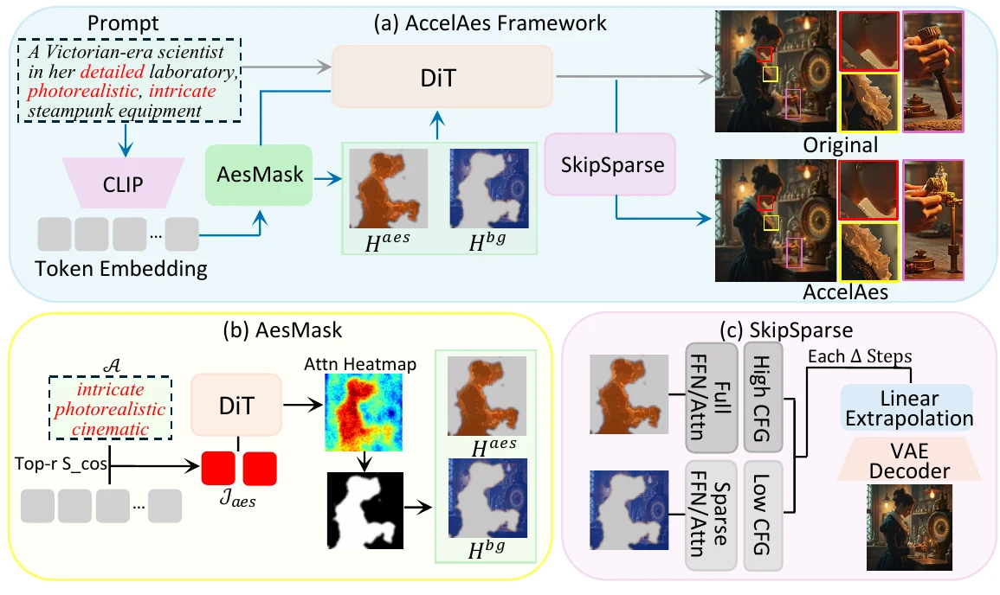
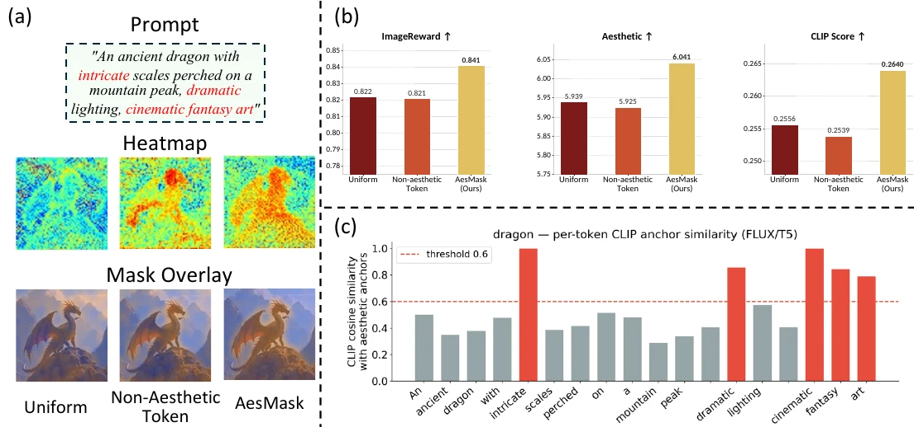
Results
AccelAes is evaluated on Lumina-Next-T2I, SD3-Medium, and FLUX.1-dev under training-free settings.
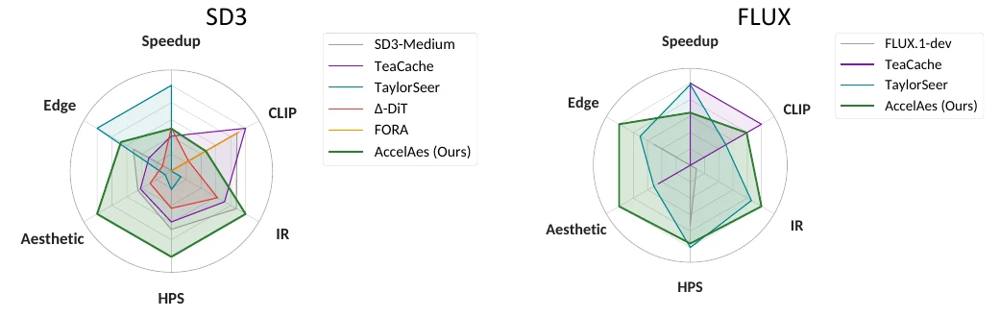
| Backbone | Speedup | ImageReward | HPSv2 | Aesthetic |
|---|---|---|---|---|
| Lumina-Next | 2.11x | 0.841 | 0.2740 | 6.041 |
| SD3-Medium | 1.50x | 0.904 | 0.3014 | 5.990 |
| FLUX.1-dev | 1.73x | 1.317 | 0.3214 | 6.372 |
Numbers are reported from the repository evaluation tables. Higher ImageReward, HPSv2, and Aesthetic scores are better.
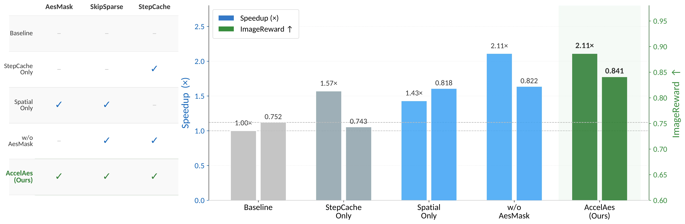
Additional Validation
We distill additional experiments into compact tables and charts: human preference, prompt robustness, scene generalization, overhead, distilled-model compatibility, and static-mask behavior.
15 annotators, 60 randomized pairs, 4 questions. Bars show non-tie win rates for AccelAes.
| Comparison | Overall | Align | Appeal | Artifacts |
|---|---|---|---|---|
| Aes/Dense | 67% | 59% | 68% | 64% |
| Aes/FORA | 89% | 90% | 87% | 94% |
| Aes/no SCFG | 66% | 69% | 66% | 68% |
AccelAes works without explicit aesthetic adjectives and still benefits when reliable cues are present.
Fallback behavior handles prompts without reliable aesthetic triggers.
All six hard scene categories show positive ImageReward change, including non-centric and ambiguous foreground/background cases.
FLUX.1-schnell uses only 4 distilled steps, so this test emphasizes compatibility rather than large wall-clock gains.
| Config | IR | HPSv2 | CLIP |
|---|---|---|---|
| schnell-dense | 1.090 | 0.301 | 0.268 |
| TaylorSeer | 1.100 | 0.301 | 0.269 |
| AccelAes | 1.132 | 0.304 | 0.270 |
Frequent refresh introduces late-stage attention jitter. Late-mask and fallback correction recover 92.7-95.4% of dense IR on mined failure cases.
Visual Gallery
Visual examples show that AccelAes keeps semantic structure while sharpening perceptually important details.
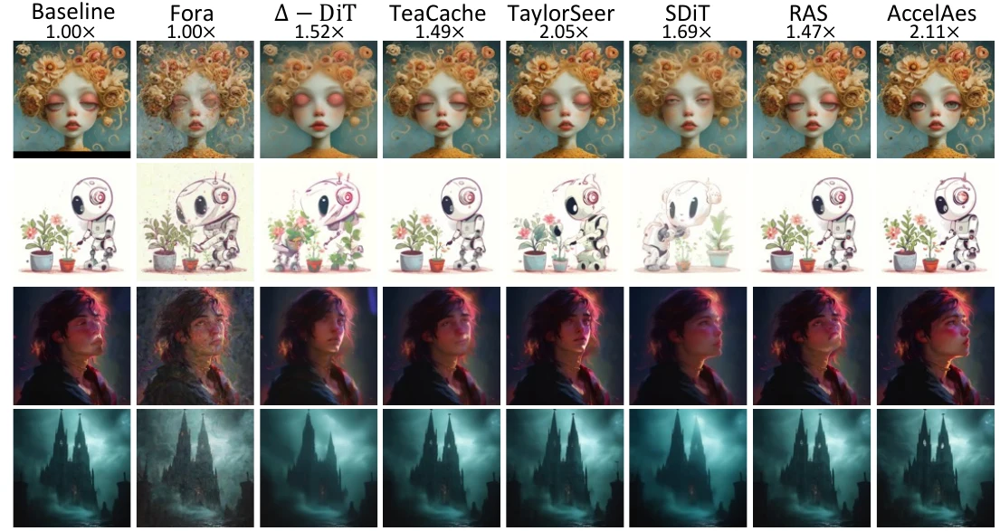
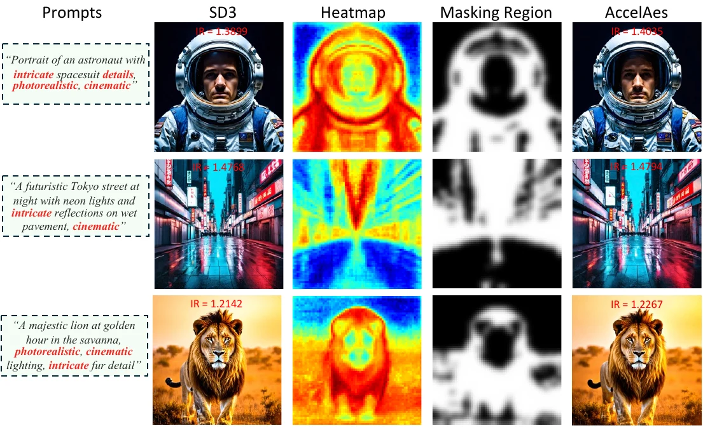
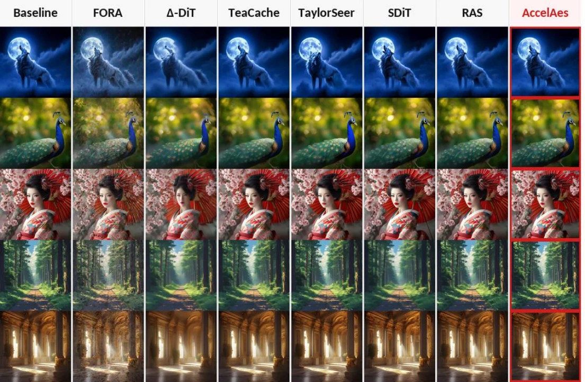
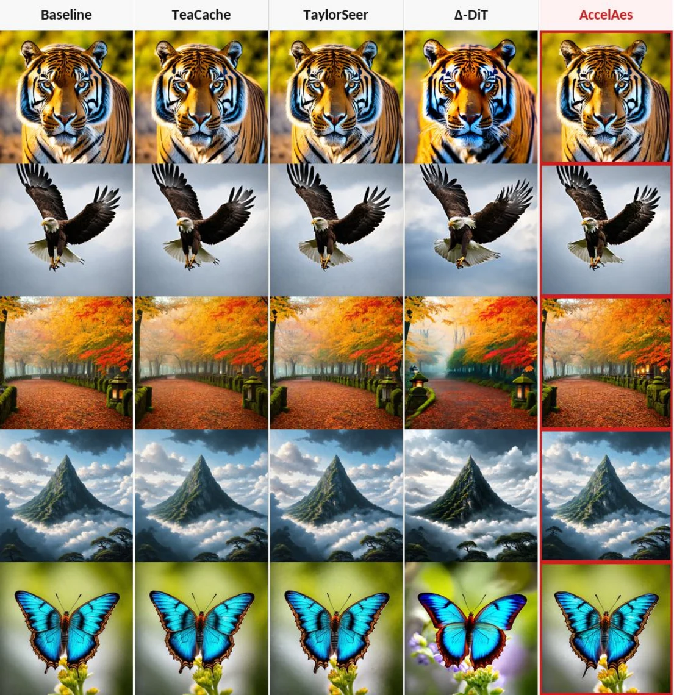
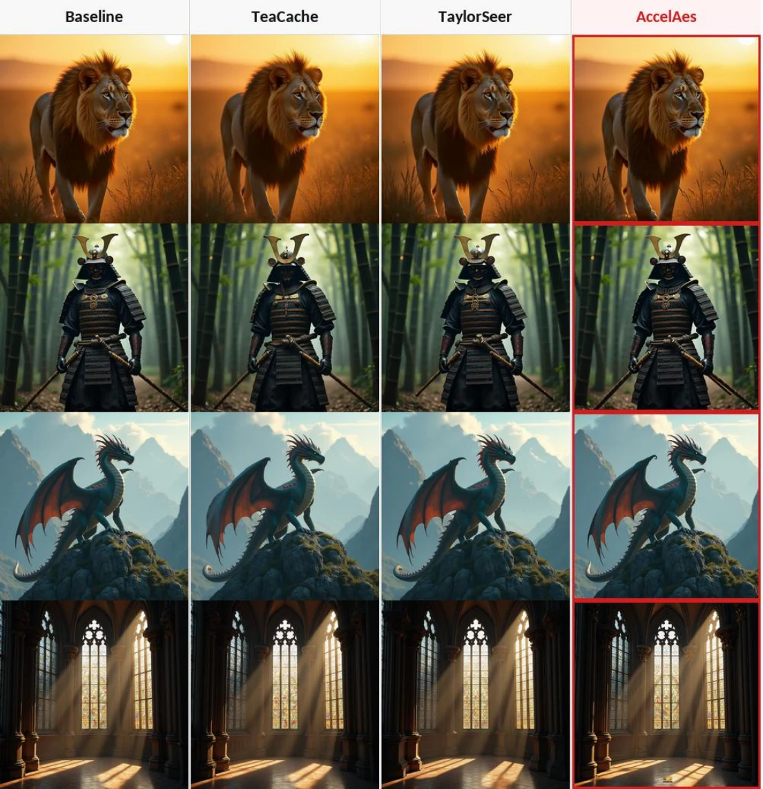
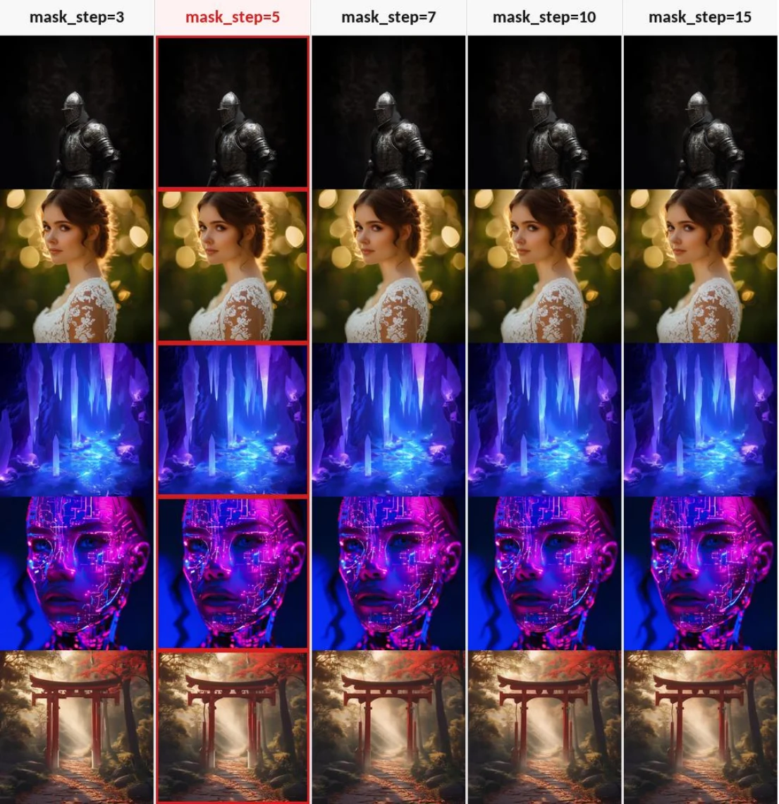
mask_step.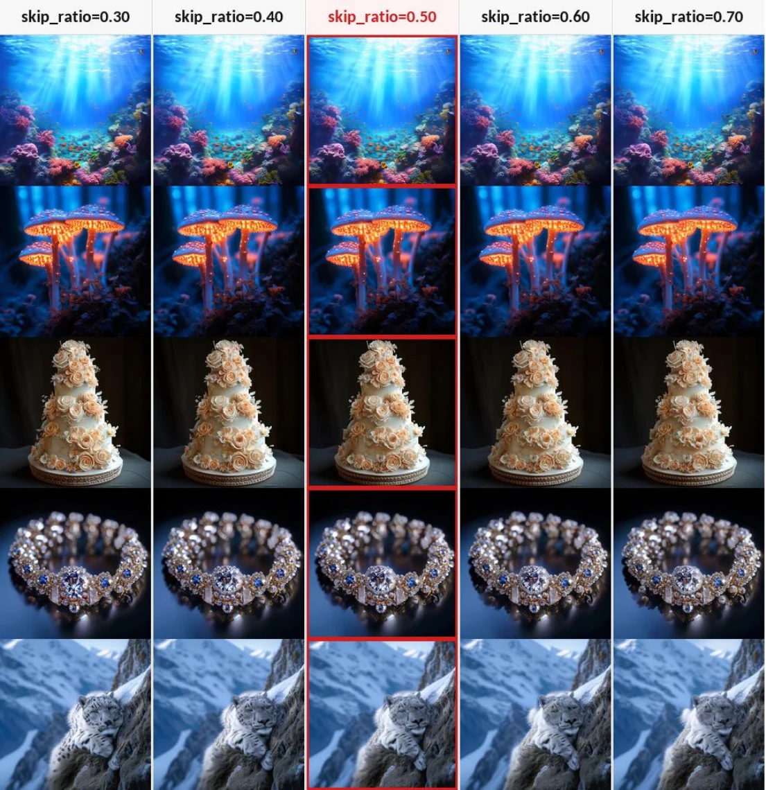
skip_ratio.Citation
@article{yin2026accelaes,
title={AccelAes: Accelerating Diffusion Transformers for Training-Free Aesthetic-Enhanced Image Generation},
author={Yin, Xuanhua and Xu, Chuanzhi and Zhou, Haoxian and Wei, Boyu and Cai, Weidong},
journal={arXiv preprint arXiv:2603.12575},
year={2026}
}